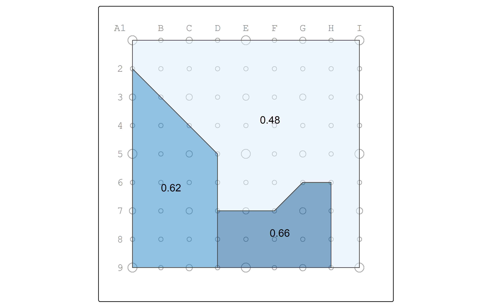
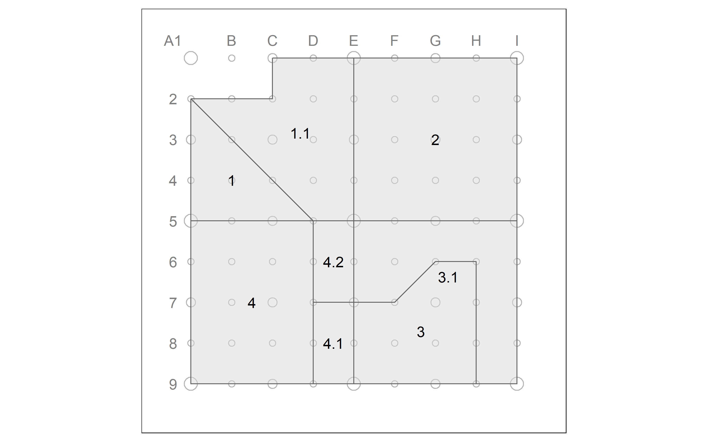
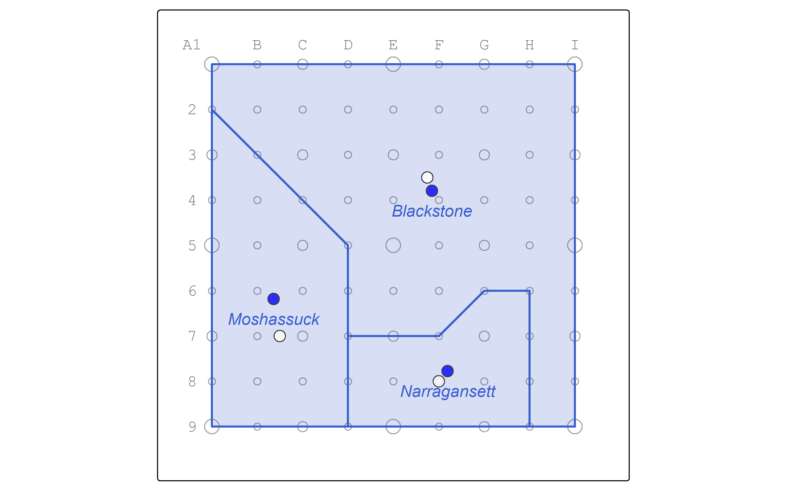
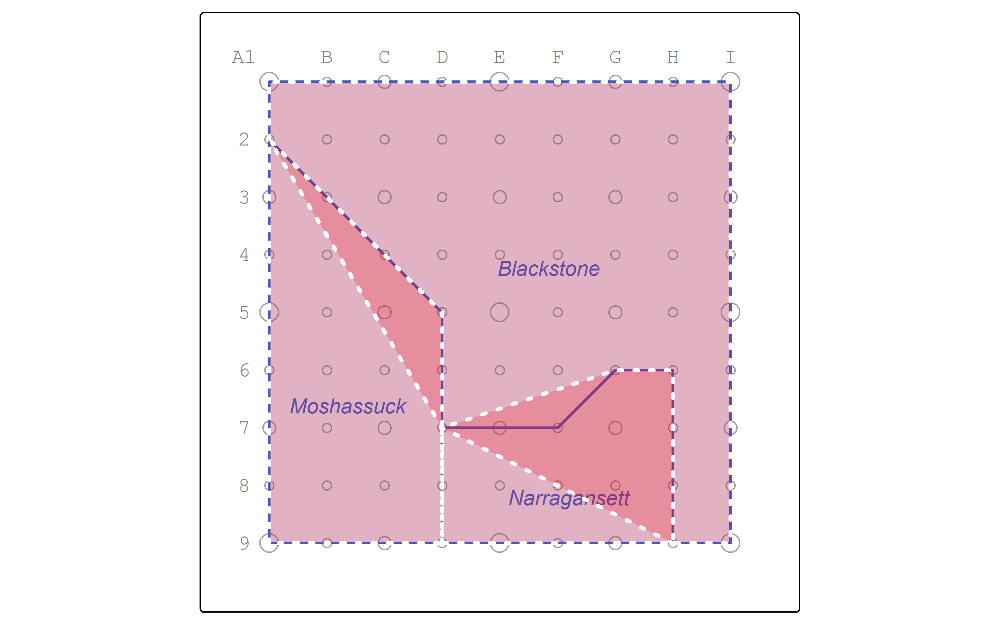
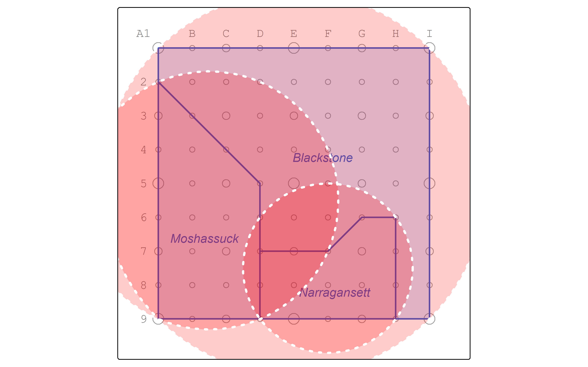

Chapter 2 Measuring and constructing shapes
Let’s practice using spatial functions to measure and characterize the shapes of polygons using the example of watersheds.
All of these measurements are dependent upon the accuracy of the map projection in which the data is stored.
Also, different from normal GIS, measurements produce a value with a unit in R!
This can be helpful, but when it isn’t, it’s easy enough to convert back to a simple number with as.numeric().
2.1 Area and Perimeter
What is the area of each watershed? You’ll need to know which column stores the geographic geometry data.
## Warning: There was 1 warning in `stopifnot()`.
## ℹ In argument: `wperim = st_perimeter(geom)`.
## Caused by warning in `st_perimeter()`:
## ! 'st_perimeter' is deprecated.
## Use 'sf::st_perimeter or lwgeom::st_perimeter_lwgeom' instead.
## See help("Deprecated")| name | warea | wperim |
|---|---|---|
| Moshassuck | 1031250 [m^2] | 4560.660 [m] |
| Narragansett | 593750 [m^2] | 3353.553 [m] |
| Blackstone | 2375000 [m^2] | 7914.214 [m] |
We can also calculate the compactness as a function of perimeter and area.
watersheds_shp <- mutate(watersheds_shp,
compact = round(
as.numeric(
(400 * pi * warea) / wperim^2),
2))
watersheds_shp |> st_drop_geometry() |> knitr::kable()| name | warea | wperim | compact |
|---|---|---|---|
| Moshassuck | 1031250 [m^2] | 4560.660 [m] | 62.30 |
| Narragansett | 593750 [m^2] | 3353.553 [m] | 66.34 |
| Blackstone | 2375000 [m^2] | 7914.214 [m] | 47.65 |
Do the compactness scores make sense? Let’s map them.
pointgrid_map +
watersheds_shp |>
tm_shape() +
tm_polygons(col = "compact",
alpha = 0.5,
legend.show = FALSE) +
tm_text("compact")## ## ── tmap v3 code detected ──────────────────────────────────────────────────────────────────────────────────────────────## [v3->v4] `tm_polygons()`: use 'fill' for the fill color of polygons/symbols (instead of 'col'), and 'col' for the
## outlines (instead of 'border.col').
## [v3->v4] `tm_polygons()`: use `fill_alpha` instead of `alpha`.
## [v3->v4] `tm_polygons()`: use `fill.legend = tm_legend_hide()` instead of `legend.show = FALSE`.
## This message is displayed once every 8 hours.
Looks good to me!
2.2 Centroids
We also have a few methods for converting polygons to points.
Centroids are located at the center of gravity of a polygon.
Map the centroid points as blue dots.
watersheds_centroids_map <- watersheds_centroids |>
tm_shape() +
tm_symbols(
size = 0.8,
fill = "blue",
fill_alpha = 0.8
)
pointgrid_map +
watersheds_map +
watersheds_centroids_map
2.3 Point on surface
Centroids sometimes fall outside of the polygon, which might produce undesirable results for cartography or topological analysis. In those cases point_on_surface may be better.
Let’s see the points on surface in relation to the centroids.
watersheds_points_on_surface_map <- watersheds_pt_on_surf |>
tm_shape() +
tm_symbols(
size = 0.8,
fill = "white",
fill_alpha = 0.8
)
pointgrid_map +
watersheds_map +
watersheds_centroids_map +
watersheds_points_on_surface_map
2.4 Convex hull
Some measures of gerrymandering rely on the ratio of the area to the area of the convex hull or of the minimum bounding circle.
Let’s calculate the convex hull.
And visualize the resulting polygons.
pointgrid_map +
watersheds_map +
tm_shape(watersheds_hull) +
tm_polygons(
col = "white",
lwd = 3,
lty = "dotted",
fill = "red",
fill_alpha = 0.2
) 
How would the ratios of area to area of the convex hull come out? The watersheds contributing to more overlapping areas whould result in lower compactness scores.
watersheds_hull <- mutate(watersheds_hull,
compact_hull = round(as.numeric(warea / st_area(geom)), 2))
watersheds_hull |> st_drop_geometry() |> knitr::kable()| name | warea | wperim | compact | compact_hull |
|---|---|---|---|---|
| Moshassuck | 1031250 [m^2] | 4560.660 [m] | 62.30 | 1.00 |
| Narragansett | 593750 [m^2] | 3353.553 [m] | 66.34 | 0.90 |
| Blackstone | 2375000 [m^2] | 7914.214 [m] | 47.65 | 0.82 |
2.5 Minimum bounding circle
Finally, let’s find the minimum bounding circles.
This function is not yet included in the current sf package on CRAN, but it is in lwgeom.
Let’s map the resulting circle polygons.
pointgrid_map +
watersheds_map +
tm_shape(watersheds_boundcircle) +
tm_polygons(
col = "white",
lwd = 3,
lty = "dotted",
fill = "red",
fill_alpha = 0.2
) 
Finally, let’s calculate the ratio of area of the polygon to the area of its minimum bounding circle.
watersheds_boundcircle <- mutate(watersheds_boundcircle,
compact_circ = round(as.numeric(warea / st_area(geom)), 2))
watersheds_boundcircle |> st_drop_geometry() |> knitr::kable()| name | warea | wperim | compact | compact_circ |
|---|---|---|---|---|
| Moshassuck | 1031250 [m^2] | 4560.660 [m] | 62.30 | 0.36 |
| Narragansett | 593750 [m^2] | 3353.553 [m] | 66.34 | 0.48 |
| Blackstone | 2375000 [m^2] | 7914.214 [m] | 47.65 | 0.38 |